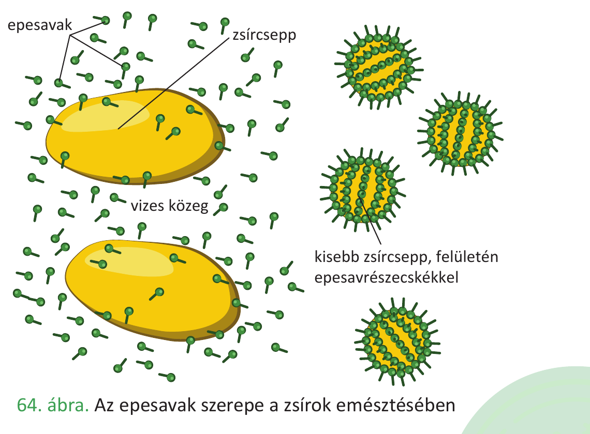

30. Szénhidrátok és lipidek emésztése¶
Az emésztés a tápanyagok hidrolízissel történő monomerekre bontása. A szénhidrátok és a lipidek emésztési útja a tápcsatornában más-más szakaszokon zajlik, eltérő enzimekkel és segédanyagokkal. Ezt a két folyamatot tárgyaljuk párhuzamosan.
A szénhidrátok emésztése¶
A szénhidrátok fajlagos energiatartalma kb. 17 kJ/g. A táplálékkal felvett szénhidrátok főleg poliszacharidok (keményítő, glikogén) és diszacharidok (szacharóz, laktóz). Az emésztés végterméke a monoszacharidok (glükóz, fruktóz, galaktóz).
A szájüregben¶
Az emésztés a szájüregben kezdődik. A nyálmirigyek (fültőmirigy, nyelv alatti, állkapocs alatti) napi 500-600 ml semleges/enyhén lúgos nyálat termelnek, amely tartalmazza:
- nyálamiláz enzimet, amely az összetett szénhidrátok – keményítő, glikogén – emésztésének megindítását végzi (diszacharidokra/triszacharidokra),
- mucint, amely a táplálékpép összeragasztását, a falatképzést és a nyál viszkozitásának növelését szolgálja.
A gyomorban¶
A gyomorban a szénhidrátemésztés szünetel: a savas pH (0,9–1,5) inaktiválja a nyálamilázt. A gyomor nem termel szénhidrátbontó enzimet.
A vékonybélben¶
A szénhidrátemésztés a vékonybélben fejeződik be.
A hasnyálmirigy külső elválasztású része által termelt hasnyál (napi 1,2–1,5 l, pH ≈ 8) tartalmazza a hasnyálamilázt, amely a nyálamilázhoz hasonlóan a keményítőt és a glikogént maltózegységekre (és α-dextrinekre, maltotriózra) hasítja.
A bélhámsejtek felszínén elhelyezkedő enzimek végzik a befejező lebontást a monoszacharidokig:
| Enzim | Szubsztrát | Termék |
|---|---|---|
| maltáz | maltóz (malátacukor) | szőlőcukor (glükóz) |
| laktáz | laktóz (tejcukor) | glükóz + galaktóz |
| szacharáz | szacharóz (répacukor) | glükóz + fruktóz |
| α-dextrináz | α-dextrinek | szőlőcukor |
A keletkező monoszacharidok (glükóz, fruktóz, galaktóz) felszívódnak a bélhámsejteken keresztül, és a kapillárisvérbe lépnek a bolyhokban, majd a májkapuvénán át a májba jutnak.
A lipidek emésztése¶
A lipidek (zsírok) fajlagos energiatartalma a legnagyobb a tápanyagok közül: kb. 38 kJ/g. A táplálékkal felvett zsírok főként trigliceridek (glicerin + 3 zsírsav). Az emésztés végtermékei a monogliceridek és a szabad zsírsavak.
A lipidek emésztésének sajátossága, hogy a zsírok vízben rosszul oldódnak, így az emésztésük csak akkor hatékony, ha előbb emulzióba kerülnek (apró cseppekre oszlanak a vizes közegben).
A szájüregben¶
A nyelvmirigyek által termelt nyelvi lipáz kis mértékben már a szájüregben elkezdi a trigliceridek bontását (szabad zsírsavakra és monogliceridekre). Hatása csekély.
A gyomorban¶
A gyomor fősejtjei termelnek egy gyomorlipázt, amely szintén megkezdi a trigliceridek bontását zsírsavakra és monogliceridekre. Ennek hatása is kicsi a többi enzimhez képest.
A vékonybélben — itt zajlik a fő lipid-emésztés¶
A vékonybélben a lipidek emésztése két szervezetnek a váladékaitól függ: a máj termeli az epét, a hasnyálmirigy pedig a lipázt tartalmazó hasnyalat.
Az epe szerepe (a máj váladéka):
Az epe enzimet nem tartalmaz, de tartalmaz epesavakat, koleszterint, bilirubint, ásványi sókat és vizet. Az epe az epehólyagban raktározódik és bekoncentrálódik, majd a patkóbélbe ömlik.
Az epesavak szerepe kettős, és ez kulcsfontosságú a zsírok emésztésében:
- Emulzióban tartják a zsírokat: amfipatikus jellegük (van vízoldó és zsíroldó részük) miatt körberakják az apró zsírcseppek felületét, és megakadályozzák, hogy összeolvadjanak. Így nő a zsírok fajlagos felülete (sokkal több enzim férhet hozzájuk egyszerre).
- Aktiválják a zsírbontó lipázokat (a hasnyálmirigylipáz kezdetben inaktív, az epesavak hatására válik aktívvá).
- Az epesavas sók lúgos kémhatást is eredményeznek a vékonybélben.
Funkciójuk a szappanokéhoz hasonló: csökkentik a felületi feszültséget és növelik a fajlagos felületet.
A hasnyálmirigylipáz szerepe:
A hasnyálmirigy által termelt hasnyálmirigylipáz a lipidek észterkötéseit hidrolizálja:
- emulgeált trigliceridek → zsírsavak + monogliceridek.
Az emésztés végterméke: szabad zsírsavak és monogliceridek.
A zsírok felszívása¶
A vékonybél bélhámsejtjein keresztül a glicerin és a zsírsavak (kisebb mennyiségben) passzív transzporttal jutnak a sejtbe. A bélhámsejtekben a glicerin és a zsírsavak ismét trigliceriddé kapcsolódnak össze. A trigliceridek fehérjéhez kapcsolódnak, és így létrejön a kilomikron (lipoprotein: zsír és fehérje együtt).
A kilomikronok exocitózissal távoznak a bélhámsejtekből, és a nyirokerekbe (a bélboholy centrális nyirokere) kerülnek — nem közvetlenül a vérbe! A nyirokerek hálózata összegyűlik a fő nyirokérben (mellvezetékben), amely a kulcscsont alatt a vénás keringésbe ömlik. Innen a vér viszi tovább a zsírokat a májba és más szervekbe.
Összehasonlítás: szénhidrátok vs. lipidek emésztése¶
| Szempont | Szénhidrátok | Lipidek |
|---|---|---|
| Fajlagos energiatartalom | 17 kJ/g | 38 kJ/g |
| Szájüregi emésztés | nyálamiláz (jelentős) | nyelvi lipáz (csekély) |
| Gyomri emésztés | nincs (savas pH inaktivál) | gyomorlipáz (csekély) |
| Vékonybéli enzimek | hasnyálamiláz, maltáz, laktáz, szacharáz, α-dextrináz | hasnyálmirigylipáz |
| Segédanyag | – | epesavak (emulgeálás, aktiválás) |
| Végtermékek | monoszacharidok (glükóz, fruktóz, galaktóz) | monogliceridek + zsírsavak |
| Felszívás módja | aktív transzport (Na⁺-társszállítás), könnyített diffúzió | passzív transzport (diffúzió) |
| Felszívás útja | kapillárisvér → májkapuvéna → máj | bélhámsejtben triglicerid újraszintézis → kilomikron → nyirokér → mellvezeték → vénás keringés |
Ábrák¶

Az emberi tápcsatorna áttekintése: szájüreg → nyelőcső → gyomor → vékonybél → vastagbél, a kapcsolódó nagy mirigyekkel (nyálmirigyek, máj, epehólyag, hasnyálmirigy). A szénhidrátok és a lipidek ezt az utat járják be az emésztés során.

A zsírcsepp emulgeálása az epesavak hatására: az amfipatikus epesavmolekulák körberakják az apró zsírcseppek felületét, megakadályozzák összeolvadásukat, így a fajlagos felület nő — a hasnyálmirigylipáz hatékonyan tud rajta dolgozni.
Az anyag a 2. tankönyv 42–51. oldalain található.